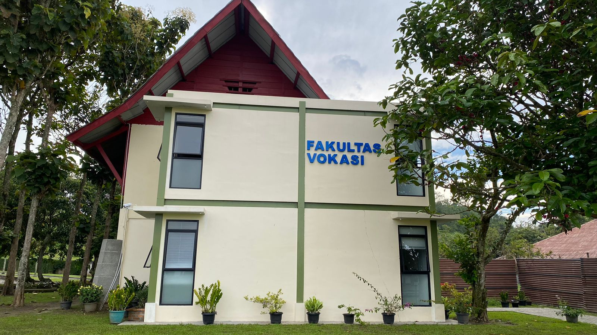
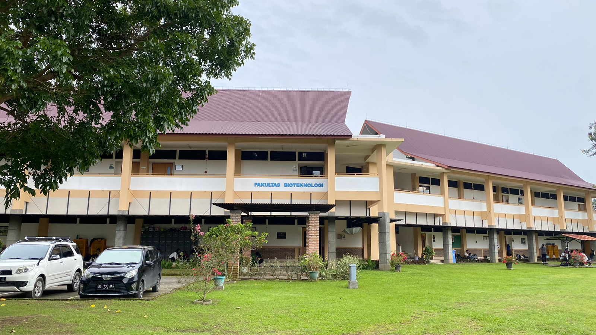

Program Studi
| No. | Fakultas | Foto | Deskripsi | Program Studi | Aksi |
|---|---|---|---|---|---|
| 1 | Fakultas Vokasi |  | Pendidikan vokasi telah menjadi landasan pertama bagi Institut Teknologi Del sejak pendiriannya pada tahun 2001, awalnya dikenal sebagai Politeknik Informatika Del. Jenjang vokasi diarahkan pada pendidikan tinggi yang menitikberatkan pada penerapan praktis dalam suatu bidang studi khusus. Program vokasi bertujuan melatih lulusannya agar memiliki keterampilan yang sesuai dengan tuntutan lapangan kerja, mempersiapkan mereka untuk bersaing dalam skala global di Dunia Usaha dan Dunia Industri (DUDI). Pendekatan praktis yang diterapkan dalam pendidikan vokasi bertujuan menciptakan individu yang siap terjun langsung ke lapangan kerja. Institut Teknologi Del dengan yakin mempersembahkan lulusan vokasi yang kompeten dan siap menghadapi berbagai tantangan di dunia kerja. | Sarjana Terapan Teknologi Perangkat Lunak D3 Teknologi Informasi D3 Teknologi Komputer |
Edit |
| 2 | Fakultas Informatika dan Teknik Elektro |  |
PFakultas Teknik Informatika dan Elektro (FITE) di IT Del didirikan sejalan dengan perubahan Politeknik Informatika Del (PI Del) menjadi Institut Teknologi Del pada tahun 2013. FITE, sebagai bagian integral dari transformasi tersebut, membangun fondasi bagi tiga program studi utama. Program-program tersebut dirancang untuk memberikan pemahaman yang komprehensif dalam bidang teknik informatika dan elektronika kepada para mahasiswa. Tujuannya adalah untuk mempersiapkan generasi yang terampil dan adaptif dalam menghadapi tuntutan industri teknologi yang terus berkembang. Dengan pengajaran yang terkini dan pendekatan praktis, FITE berkomitmen untuk menghasilkan lulusan yang siap menghadapi tantangan global di ranah teknologi. | S1 Informatika S1 Sistem Informasi S1 Teknik Elektro |
Edit |
| 3 | Fakultas Teknik Industri |  |
Fakultas Teknik Industri di Institut Teknologi Del merupakan entitas akademis yang menyajikan program pendidikan dan penelitian khusus dalam ranah teknik industri. Fokus utama fakultas ini adalah memperkaya pengetahuan mahasiswa dalam keterampilan teknis dan manajerial yang penting untuk merancang, mengoptimalkan, dan mengelola sistem produksi dan operasi di berbagai industri. Melalui program-programnya, mahasiswa memiliki kesempatan untuk mengejar gelar sarjana dalam berbagai bidang ilmu yang berkaitan erat dengan teknik industri. Fakultas Teknik Industri di Institut Teknologi Del menyuguhkan 2 program studi pada tingkat Strata Satu (Sarjana), membawa fokusnya pada aspek-aspek krusial dalam dunia teknik industri untuk menciptakan lulusan yang siap berkontribusi di sektor industri yang beragam. | S1 Manajemen Rekayasa S1 Teknik Metalurgi |
Edit |
| 4 | Fakultas Bioteknologi |  | Fakultas Bioteknologi di Institut Teknologi Del telah menjadi pusat unggulan dalam program akademis dan penelitian di bidang bioteknologi. Beragam disiplin ilmu terkait disajikan di sini, memberikan kesempatan kepada mahasiswa untuk mengejar gelar sarjana yang terkait dengan aplikasi bioteknologi. Dengan fokus pada pendidikan tingkat Strata Satu (Sarjana), fakultas ini menghadirkan satu program studi yang mencakup aspek-aspek penting dalam domain yang luas ini. Adanya fasilitas penelitian canggih memungkinkan mahasiswa untuk menggali dan menerapkan pengetahuan teoritis dalam konteks praktis, mempersiapkan mereka untuk kontribusi yang signifikan dalam industri bioteknologi. Fakultas Bioteknologi di IT Del telah menjadi landasan penting bagi pengembangan kemampuan mahasiswa dan inovasi di sektor bioteknologi. | S1 Teknik Bioproses | Edit |